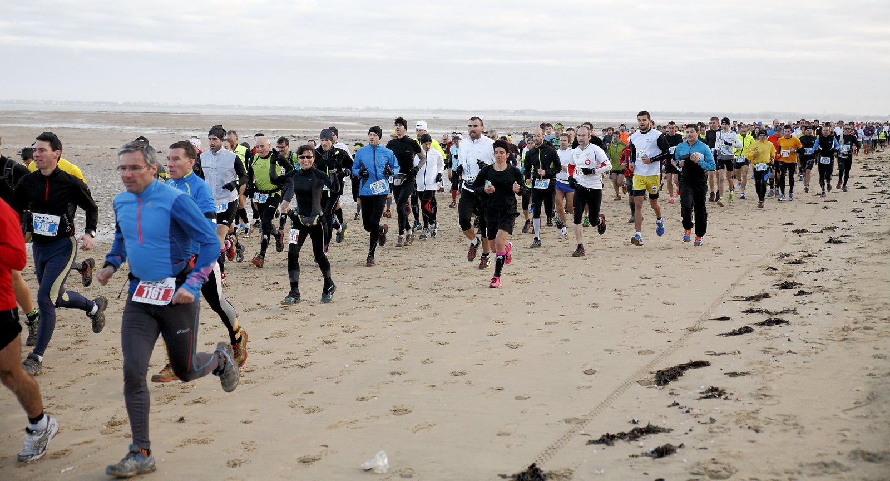

Trails
Qu’est-ce que le trail ?
Venu des États-Unis, le trail, signifiant chemin ou sentier en anglais, est une course pédestre avec classement et/ou prise de temps se déroulant en autonomie ou en semi-autonomie, en milieu naturel sur un parcours matérialisé formé notamment de chemins ou de sentiers.
La distance d'un trail se comprend généralement entre une distance de 42 km et 80 km maximum (au-dessus étant considérée comme un ultra-trail et en dessous étant considéré comme un trail court) et dont la totalité des surfaces goudronnées n’excèdent pas 15% à 25% de distance totale du parcours.
Il se résume à quelques principes simples : une course d’endurance, dans un environnement et sur un terrain naturel, avec des obstacles liés à ce cadre : dénivelés, irrégularités des sentiers, météo...
Trails à venir
Aucun trail à venir dans le département pour le moment.
Vous pouvez cependant découvrir les trails à venir au niveau nationnal pour l'année 2020 sur le site de la Fédération Française d'athlétisme :
Accéder au siteTrails passés
2020
Trail de la Côte Sauvage - 16 février 2020
Résultats à venir
2019
Trail de la Côte Sauvage - 10 février 2019
2018
Trail de la Côte Sauvage - 11 février 2018
2017
Trail de la Côte Sauvage - 12 février 2017
2016
Trail de la Côte Sauvage - 14 février 2016
2015
Trail de la Côte Sauvage - 15 février 2015
2014
Trail La Tremblade - 16 février 2014
2013
Trail La Tremblade - 17 février 2013
2012
Trail La Tremblade - 25 mars 2012
2011
Trail La Tremblade - 13 février 2011
2010
Trail La Tremblade - 13 février 2010
Prochains évènements
Dimanche 01 mars 2020
Entraînement
Forêt de La Coubre
de 9h à 11h45
EntraînementWeek-end du 21 et 22 mars 2020
Course Moyenne et Longue Distance
Forêt de la Coubre
Samedi : Moyenne Distance
Dimanche : Longue Distance
CompétitionWeek-end du 28 et 29 mars 2020
Stage CO
Samedi : Saint-Augustin
Hébergement : Boyardville
Dimanche : Forêt des Saumonards
StageNous suivre